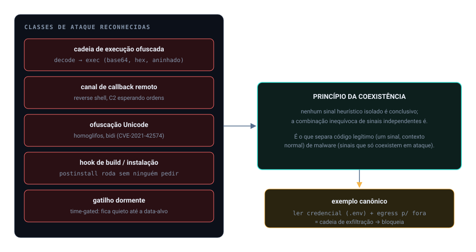
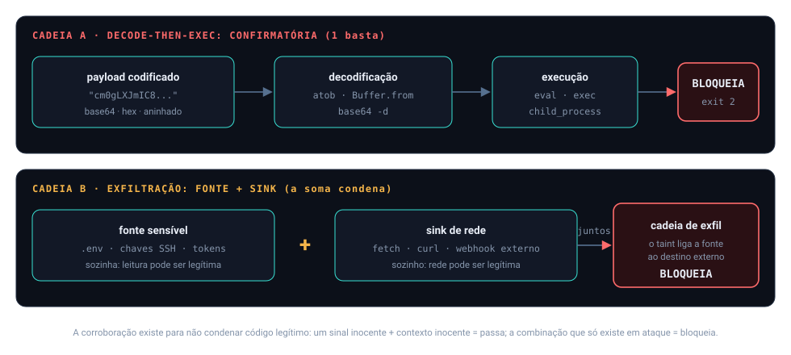

Início/Conceitos/8 · Código malicioso e supply-chain
conceito 8 · malware e cadeia de suprimentosCódigo malicioso e supply-chain
Aqui mora o malware de verdade: payload codificado para virar exec, shells reversos, evasão forense, esteganografia Unicode, abuso de manifesto e a cadeia de exfiltração. A regra que amarra tudo: fonte sensível somada a canal de saída, coexistindo, já é hostil.
Um payload é escondido dentro de uma string codificada e executado em runtime (decode → exec); o decoder decodifica e reescaneia. Comandos são montados em pedaços (dynamic command) ou shells reversos abrem canal de volta ao atacante. A evasão tenta se apagar (self-clean), esperar uma data (time-gated) ou usar caracteres Unicode invisíveis para enganar o leitor humano (Trojan Source). No manifesto, scripts de postinstall e build.rs rodam código na instalação. E credencial lida mais canal de rede no mesmo arquivo é cadeia de exfiltração.

Do zero: as classes de ataque
Decode → exec: o código real vem em base64/hex/charCode e só existe depois de decodificado, para escapar da análise estática. Reverse shell: a vítima conecta de volta ao atacante e entrega um shell. Self-clean: o script se apaga após rodar, destruindo evidência. Time-gated: o gatilho é uma data ou versão, fica dormente até a hora. Esteganografia Unicode / Trojan Source (CVE-2021-42574): caracteres de controle bidirecional reordenam o que o compilador executa versus o que o humano lê. Abuso de manifesto: hooks de ciclo de vida (postinstall, preinstall, build.rs) executam na instalação; some-se typosquatting e redirect de registry. Credential harvest + exfil: ler segredo e mandar para fora.
Por que importa
Esses são os vetores que aparecem nos incidentes reais de supply chain (o caso ClawHub, o Shai-Hulud que migrou de postinstall para preinstall para alcançar mais máquinas, o axios comprometido). Um agente de IA que instala dependências ou cola código de um pacote é exatamente o ponto onde isso entra. A cobertura vai do truque sintático (Unicode) até a lógica de negócio do ataque (ler segredo, abrir socket).
Como se correlaciona
O fio é o princípio de coexistência: nenhuma peça isolada precisa ser conclusiva se a combinação é inequívoca. Decode sozinho pode ser legítimo; decode que vira exec, não. Ler ~/.ssh/id_rsa pode ser backup; ler e mandar por fetch é exfiltração. Por isso o decoder do pipeline reescaneia o conteúdo revelado, e a cadeia de exfil exige fonte e sink juntos. Isso conversa direto com a corroboração: sinais que se confirmam mutuamente.

Como o Nemesis aplica
O decoder executa a decodificação e, no conteúdo revelado, procura comandos da deny-list, é o vetor ClawHub clássico:
📄 .nemesis/nemesis-defender/src/scanner/decoder.rs:200-217 · payload decodificado vira sinal decode_execfor &cmd in DECODED_DENY_COMMANDS {
if decoded_lower.contains(cmd) {
violations.push(DefenderViolation {
visitor: "decode_exec".to_string(),
evidence: format!("encoded payload contains: \"{}\"", cmd.trim()),
/* "payload codificado decodifica para comando da deny-list" */ });
}
}O byte-scanner separa os controles Unicode perigosos (BiDi de reordenação, Trojan Source) dos fracos (marcas i18n, variation selectors de emoji), os primeiros são confirmatórios, os segundos exigem um segundo sinal:
📄 .nemesis/nemesis-defender/src/scanner/byte_scanner.rs:17-46 · BiDi perigoso vs fraco (CVE-2021-42574)const BIDI_DANGEROUS: &[(u32, &str)] = &[
(0x202E, "Right-to-Left Override"), (0x2066, "Left-to-Right Isolate"), /* ... */ ];
// sem uso legítimo em código → "unicode_bidi" (confirmatório)
const BIDI_WEAK: &[(u32, &str)] = &[ (0x200E, "LRM"), (0xFE0F, "Variation Selector-16"), /* ... */ ];
// aparecem em i18n/emoji → "unicode_zero_width" (corroborante)O manifest scanner mira hooks de ciclo de vida que executam (com os ataques de referência anotados):
📄 .nemesis/nemesis-defender/src/scanner/manifest_scanner.rs:1-12 · postinstall / build.rs//! package.json: postinstall/preinstall/prepare · Cargo.toml: build.rs
//! Shai-Hulud 2.0 (Nov 2025): postinstall → preinstall (mais alcance)
//! axios: postinstall dropou um RAT cross-platformE a cadeia de exfiltração só dispara com fonte sensível e sink de rede coexistindo, com allowlist para env público (que não é segredo):
📄 .nemesis/nemesis-defender/src/visitors/exfil_chain.rs:192-247 · SOURCE + SINK = maliciosolet (source_evidence, _) = match source_match { Some(p) => p, None => return Vec::new() };
let (sink_evidence, _) = match sink_match { Some(p) => p, None => return Vec::new() };
// fonte + sink presentes → exfil chain confirmado (visitor "exfil_chain")Decisões e limites
O decoder.rs (que executa a decodificação) é distinto do visitors/decode_exec.rs (que detecta o padrão decode→exec na AST): dois ângulos do mesmo vetor, separados de propósito. A allowlist de env público (NEXT_PUBLIC_*, CLIENT_ID) nasceu de dor real no projeto: sem ela, todo route handler com token público mais fetch virava Malicious. Segredo de verdade não é env público.
Os controles Unicode fracos aparecem em texto legítimo (árabe, hebraico, emoji); marcá-los sozinhos geraria falso-positivo, então são classificados como corroborantes, não confirmatórios.
Auto-checagem
Por que decode sozinho não basta, mas decode → exec sim?
Porque decodificar dado é comum e legítimo; executar o que foi decodificado em runtime é o vetor de esconder comando da análise estática. O decoder reescaneia o conteúdo revelado para flagrar exatamente isso.
Qual a regra da cadeia de exfiltração?
Fonte sensível (credencial, segredo) somada a sink de rede coexistindo no mesmo arquivo. Fonte isolada ou sink isolado não dispara; a coexistência é o sinal.
O que é Trojan Source e por que é confirmatório?
É o uso de controles Unicode bidirecionais (CVE-2021-42574) para o compilador executar uma lógica que o humano lê como outra. Esses controles não têm uso legítimo em código, então 1 ocorrência já confirma.
Para ir além
- Trojan Source (CVE-2021-42574) e CWE-506, Embedded Malicious Code.
- MITRE ATT&CK, Supply Chain Compromise.
- CWE-94, Code Injection.
Citações verificadas contra o repositório. Voltar ao índice.